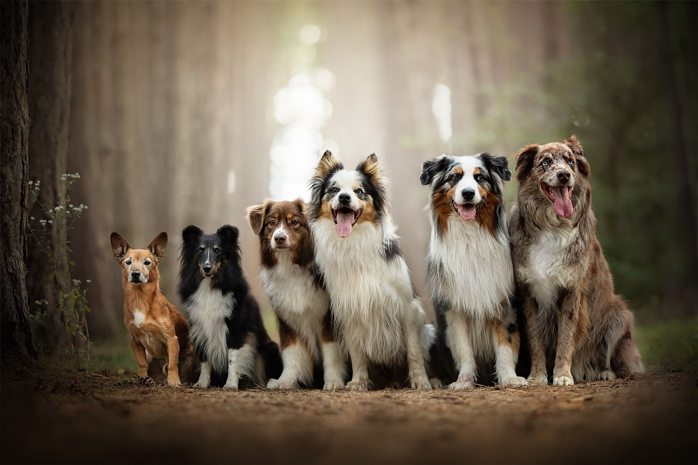
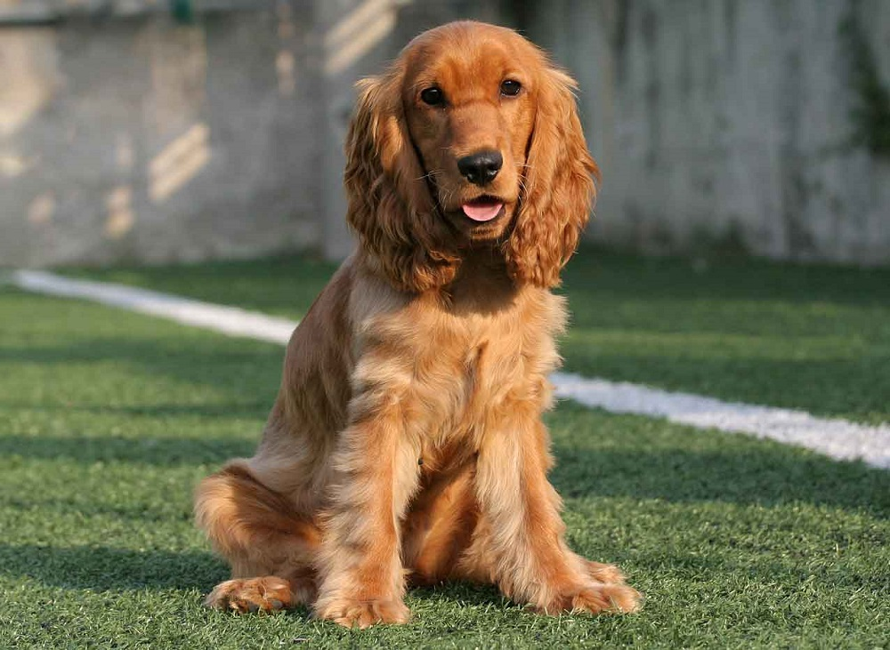
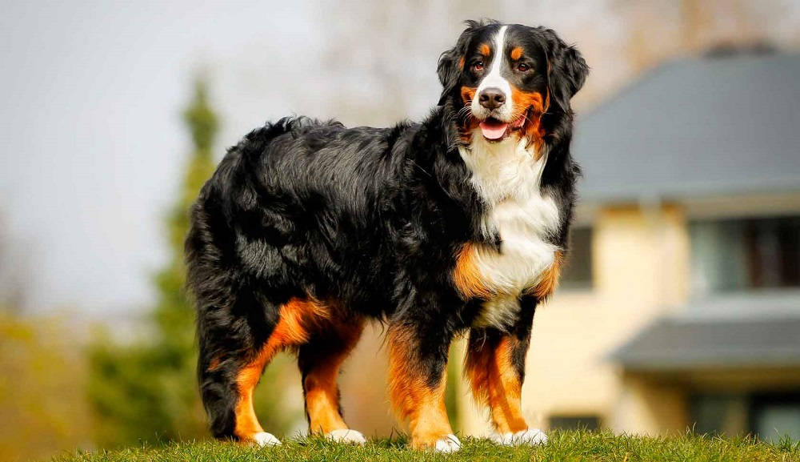
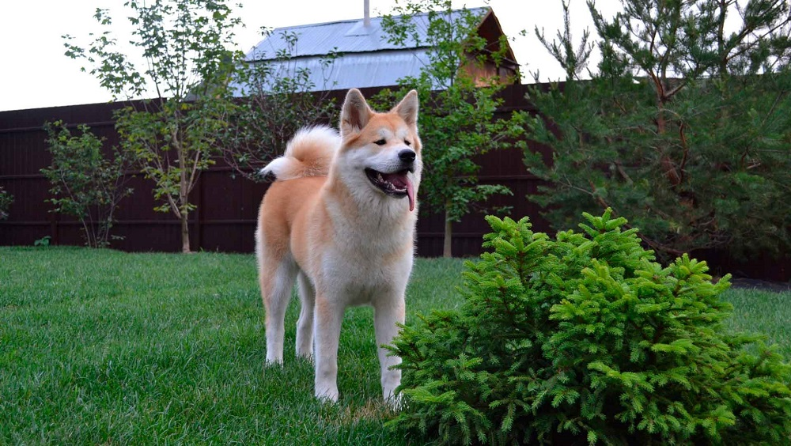
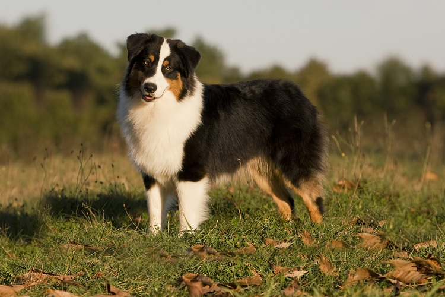
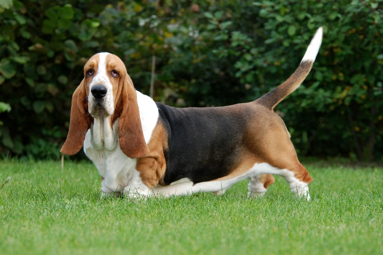
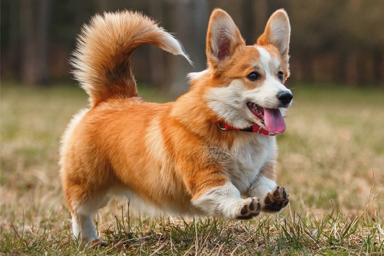
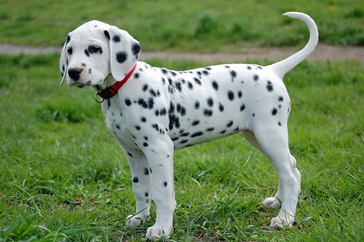

Сколько существует пород собак?
В настоящее время на земном шаре кинологическими организациями признано около четырех сотен пород. Как правило, все они разделены на десять породных групп. Собаки отличаются способностью к обучению, что позволяет использовать их как караульных, розыскных, охотничьих, спасателей, поводырей и просто животных – компаньонов.
На данной страницы будут представлены лишь некоторые из многочисленных видов.
Английский кокер-спаниель
Английский кокер-спаниель – это замечательная порода собак, которая отлично подойдет в качестве питомца и доставит много радости хозяину. Порода английский кокер-спаниель является охотничьей и раньше использовалась только для охоты на птицу. Сегодня собака английский кокер-спаниель популярный питомец, она очень добродушная и активная.
Бернский зенненхунд
Бернский зенненхунд – порода собак родом из Швейцарии, которую также называют бернская овчарка. Порода бернский зенненхунд является пастушьей. Собака бернский зенненхунд удивительна, ведь она является олицетворением силы и бесстрашия, преданности и ума.
Акита-ину
Акита-ину – это японская порода собак, которая появилась на острове Хонсю. Порода акита-ину является крупнейшей японской собакой из шпицеобразных. Собака акита-ину истинный охотник. Весьма продолжительное время их использовали для охоты на оленей, кабанов и даже медведей. Порода собак акита-ину является национальным достоянием Японии.
Австралийская овчарка
При получении этих животных использовали собак пород колли, бернский зенненхунд и пиренейская овчарка. Родина австралийцев — США. Сейчас эти собаки распространены по всему миру. Порода имеет другое название — аусси. Подвижные и невероятно трудолюбивые животные. Они быстро обучаются, стремятся угодить владельцу. Австралийцы дружелюбны к другим животным, редко проявляют агрессию. Окрас может быть любым, но более распространен триколор (сочетание белого, черного и рыжего).
Бассет-хаунд
Английская порода, которая была признана в 1955 году. Их предки использовались в пешей охоте. Они пробирались в густые заросли и поднимали зверя. В середине XIX века эти животные получили популярность у аристократов. Бассеты обладают уникальной внешностью. У них длинное туловище и короткие ноги, но при этом эти собаки очень подвижны и азартны, хорошо обучаются и находятся в постоянном движении. Характерная особенность бассетов — очень длинные и широкие висячие уши.
Вельш-корги
Животные средних размеров, родиной которых является Уэльс. Существует две разновидности: кардиган и пемброк. Корги — активные и преданные животные. Они отлично уживутся с другими домашними питомцами, очень редко проявляют агрессию. Все корги любят играть, но хорошо чувствуют настроение владельца и не склонны навязывать общение. Представители породы великолепно поддаются дрессировке. Окрасы разные: рыжий, черно-подпалый, палевый, соболь, тигровый.
Далматин
Хорватская порода. Название ей дала область Далмация, которая расположена на Балканском полуострове. Ученые утверждают, что такие собаки существуют уже много тысячелетий, так как во время раскопок были найдены древние картины с похожими животными. Мощная, выносливая и активная собака. Далматины уравновешенные, спокойные, хорошо поддается всем видам дрессировки. Особенностью породы является уникальный окрас: на белом фоне разбросаны черные или коричневые округлые пятнышки, размером с монету.
